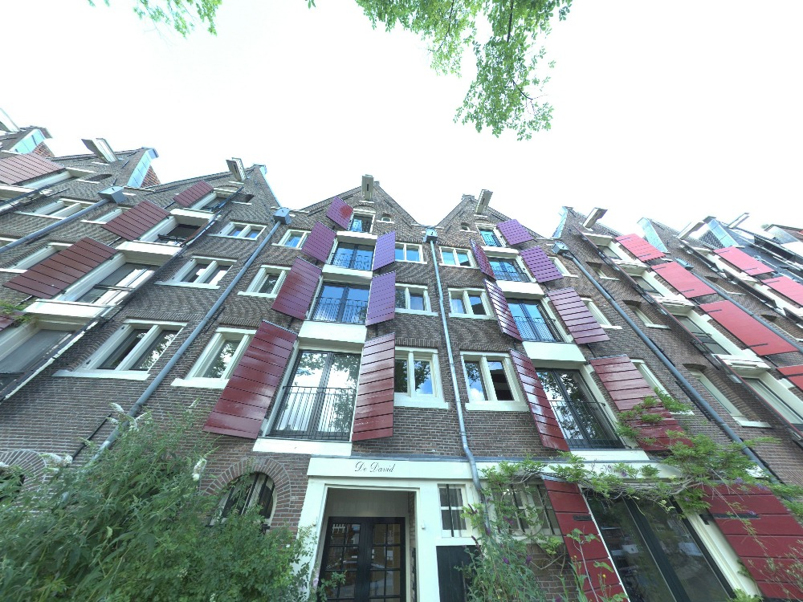
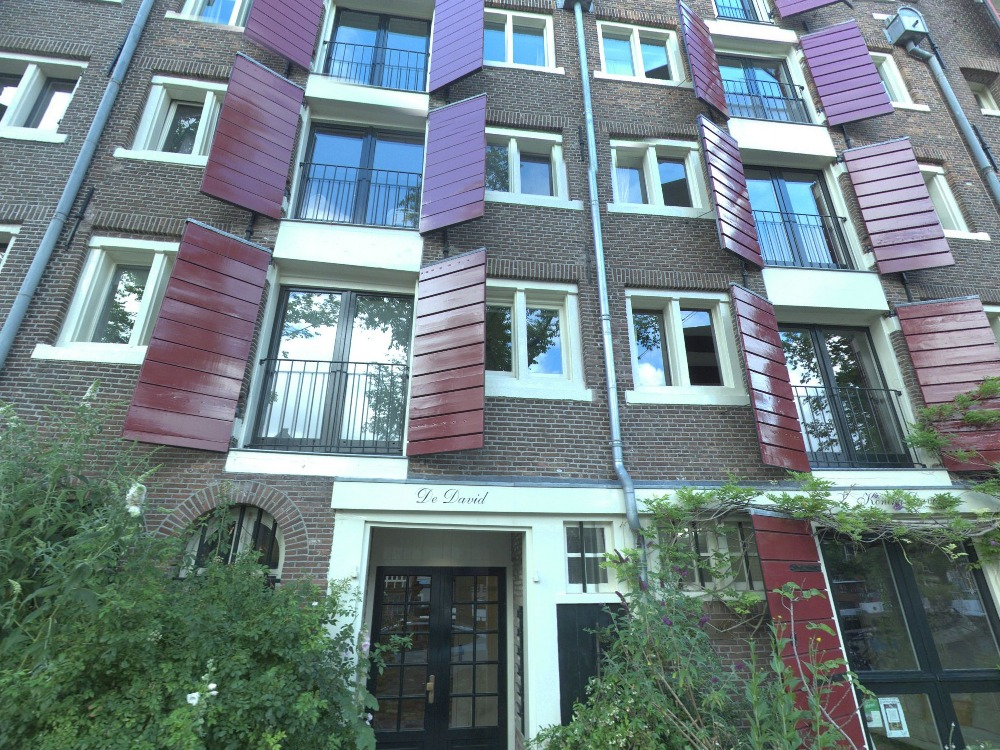
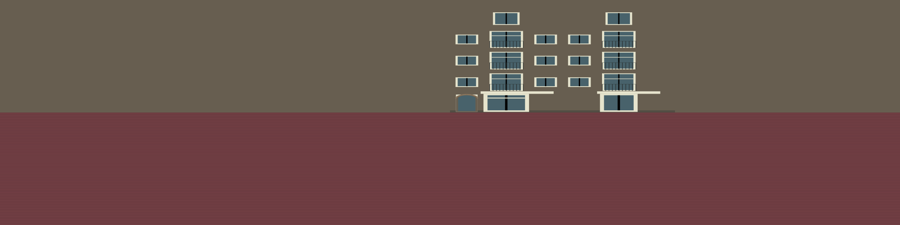
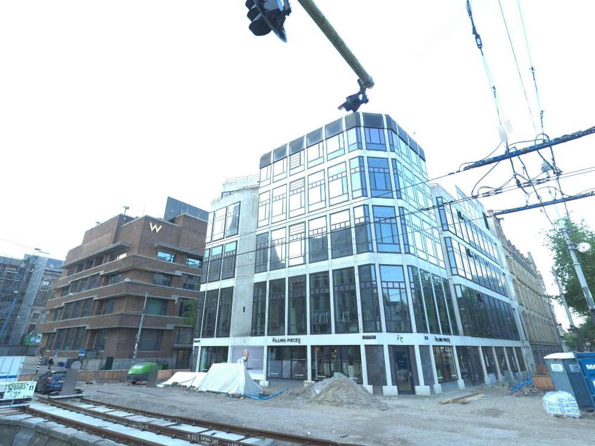
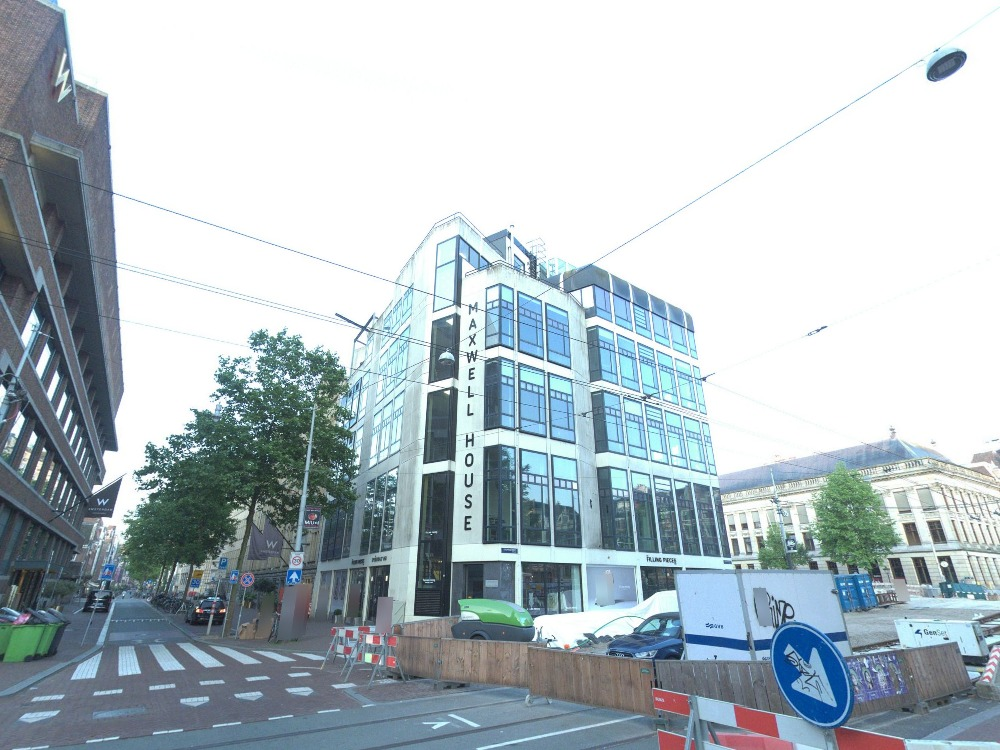
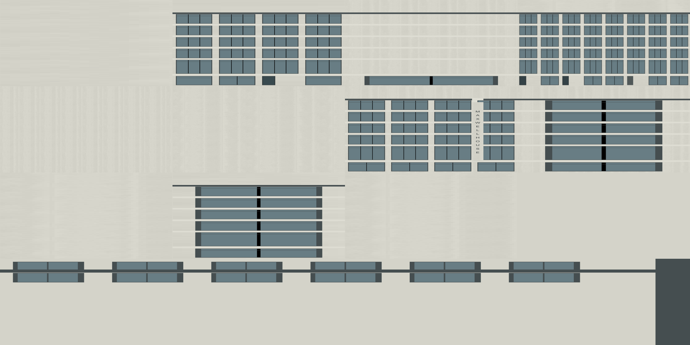

Trial only. Identical published geometry with masked base-color surface finish. Baseline / 9-level finish / cheaper 3-level finish. CPU textured orthographic previews approximate mip minification; they omit city context, shadows, real browser lighting and motion. No acceptance or performance claim.
Optional native WebGL comparison · Asset metrics · Findings and costs
142,396 → 203,072 bytes (+60,676); 3 materials / 3 primitives unchanged. red_brick_03 · amplitude 6%.



219,068 → 317,424 bytes (+98,356); 3 materials / 3 primitives unchanged. concrete · amplitude 3.5000000000000004%.


